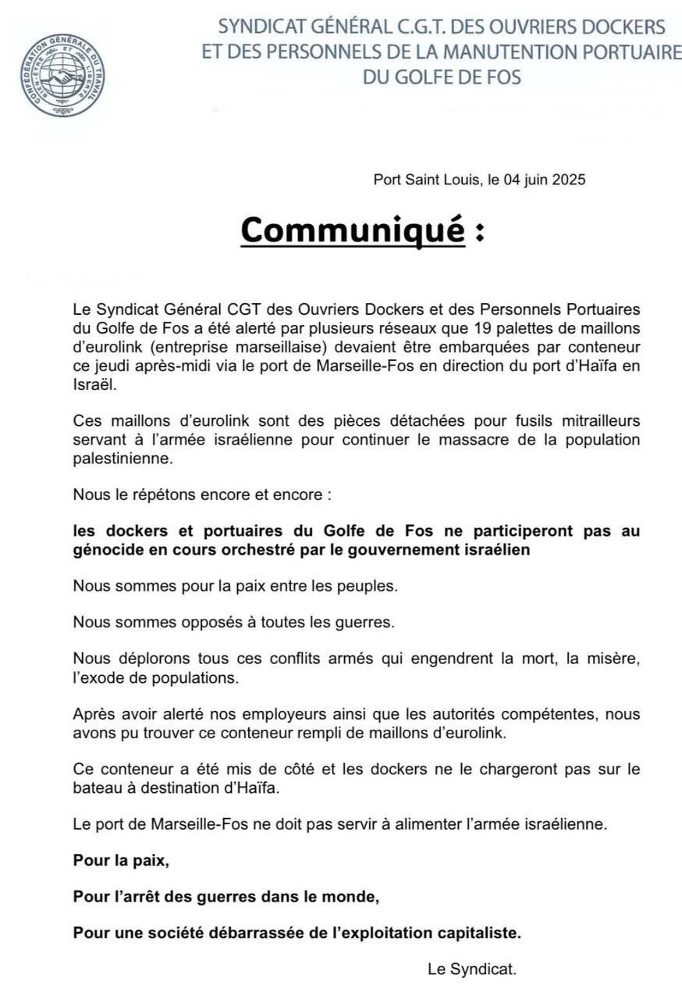

Publication d’archives
Les dockers de Fos refusent de charger de l’équipement militaire fabriqué en France à destination d'Israël
Date indiquée par Facebook · 4 juin 2025
Texte conservé avec la publication
Contexte du dossier
Le relais de Hala Abou Hassira, ambassadrice de Palestine en France, dénonce fin mai les violences subies par des civils détenus. En juin, un texte soutient les dockers de Fos refusant une cargaison présentée comme destinée à l’industrie militaire israélienne ; il renvoie aux révélations de Disclose et The Ditch. Un article d’Élisabeth Fleury dans L’Humanité expose ensuite les conclusions d’un rapport d’ONG sur les livraisons d’armes françaises. Témoignage diplomatique, initiative syndicale et enquête associative sont distingués. Leur rapprochement pose une responsabilité concrète : ne pas alimenter matériellement la guerre.

Sources
Archive rouge · export Facebook · AR-0002-FB-01104
À lire aussi · Contrairement aux affirmations du ministre des Armées, la France livre « un flux ininterrompu » d'armes à…